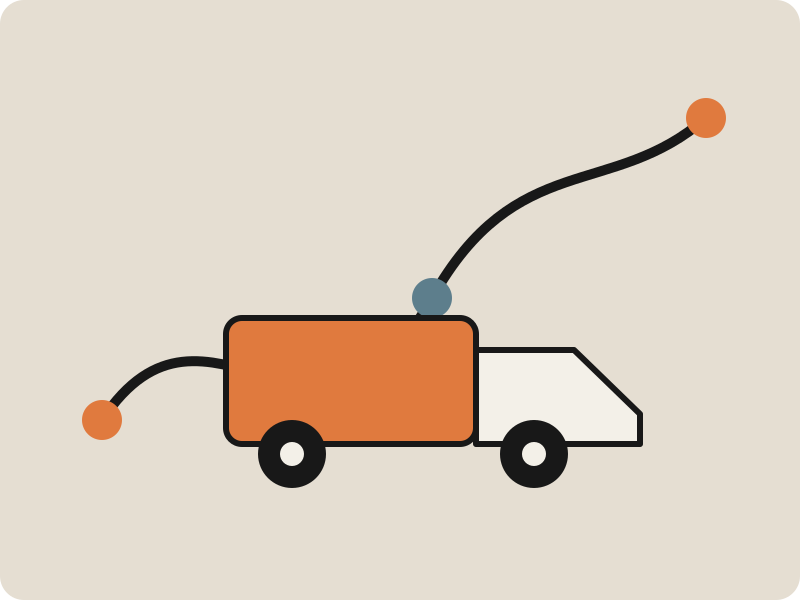

A rate tied to the load
Capture dimensions, weight, commodity, equipment, and handling needs before pricing.
Freight and transportation logistics
FleetAxis reviews lane, equipment, handling, schedule, and site access before returning a clear transportation plan.
Request a freight quote
FleetAxis turns a complicated buying decision into one clear next action.
Problem to solution
Freight quotes become unreliable when equipment, timing, site access, and handling requirements are not captured before a rate is issued.
Capture dimensions, weight, commodity, equipment, and handling needs before pricing.
Review site access, appointment rules, loading method, and contact details.
Track dispatch, pickup, transit, delivery, and exception notes.
Give shippers and receivers a direct operations contact when conditions change.
How it works
The landing page gives the visitor enough context to submit a useful request instead of a vague contact form.
Provide origin, destination, commodity, dimensions, weight, dates, and equipment needs.
FleetAxis checks appointments, access, handling, and schedule risk.
Get the rate, equipment plan, assumptions, and booking instructions.
Fictional case study
A fictional logistics program grouped 42 deliveries by site window, equipment need, and receiving contact across three active projects.
“The quote included the equipment and delivery assumptions, so the rate did not fall apart when the load reached the site.”
Questions before conversion
The FAQ is written in plain question and answer form for visitors and future answer engine markup.
Provide origin, destination, dates, commodity, dimensions, weight, equipment type, handling needs, and site contacts.
The demo covers dry van, flatbed, step deck, less than truckload, expedited, and scheduled project freight.
Yes. The template includes appointment, access, receiving contact, and delivery window fields.
No. Capacity and rates are confirmed only when the shipment is accepted and booked.
The landing page includes a dashboard preview and can be connected to a transportation management system.
No. The initial quote request has no booking obligation.
Primary action
Send the load details for a clear freight quote and operating plan.
No obligation. Fictional demo form. Connect a secure production form service before launch.